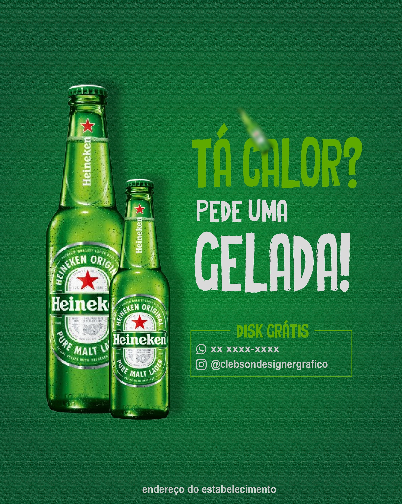

Flyer para Bar – Design Profissional para Divulgação de Promoções e Eventos
Se você precisa de um flyer profissional para bar, eu posso te ajudar. Sou designer gráfico e desenvolvo artes personalizadas para divulgação de promoções, eventos e happy hour. Com um design estratégico e chamativo, seu bar ganha mais visibilidade nas redes sociais e atrai mais clientes.

Como designer gráfico, desenvolvo flyers personalizados para bares que desejam aumentar o movimento e se destacar nas redes sociais. O design é pensado para chamar atenção rapidamente, destacar as informações principais e incentivar o público a visitar o estabelecimento.
Design Criativo para Promoções de Bar
Promoções como cerveja em dobro, drinks especiais e descontos em determinados dias precisam ser apresentadas de forma estratégica. Um flyer bem elaborado destaca essas ofertas e facilita a compreensão do público.
Se você deseja melhorar ainda mais a presença do seu bar, também pode conhecer meu serviço de designer gráfico para bar, com foco em fortalecer sua marca nas redes sociais.
Flyer para Redes Sociais
A divulgação digital é essencial para bares. Por isso, o flyer é desenvolvido em formatos ideais para Instagram, Facebook e WhatsApp, garantindo melhor visualização e engajamento.
Uma arte bem estruturada ajuda o cliente a entender rapidamente a promoção e aumenta as chances de conversão.
Divulgação de Eventos e Música ao Vivo
Bares que trabalham com música ao vivo, DJs ou eventos temáticos precisam de artes impactantes para atrair público. O flyer pode destacar atrações, datas, horários e diferenciais do evento.
Para campanhas mais completas, você também pode utilizar arte para redes sociais e manter um padrão visual profissional em todas as publicações.
Material para Impressão e Divulgação Local
Além do digital, o flyer pode ser utilizado na versão impressa para divulgação em bairros, eventos e pontos estratégicos.
Outra estratégia interessante é combinar o flyer com cartão de visita profissional, facilitando o contato com os clientes e fortalecendo sua marca.
Como funciona o processo de criação
1. Envio das informações
Você envia detalhes como promoções, eventos, bebidas, datas e qualquer informação importante que deve aparecer no flyer.
2. Planejamento visual estratégico
Organizo os elementos de forma clara, definindo hierarquia visual para destacar as informações mais importantes.
3. Criação personalizada
Desenvolvo uma arte exclusiva com foco em impacto visual, utilizando cores, tipografia e elementos que combinam com o estilo do seu bar.
4. Ajustes e entrega final
Após aprovação, realizo ajustes necessários e entrego o material pronto para redes sociais ou impressão.
Perguntas Frequentes (FAQ)
Você cria flyers personalizados para bares?
Sim. Cada flyer é desenvolvido de acordo com o estilo do bar, tipo de público e objetivo da divulgação.
O flyer pode ser usado no Instagram?
Sim. O design é adaptado para redes sociais como Instagram, Facebook e WhatsApp.
Posso divulgar eventos e promoções na mesma arte?
Sim. É possível organizar diferentes informações no flyer mantendo clareza e impacto visual.
O que preciso enviar para iniciar o projeto?
Envie promoções, bebidas, datas, eventos, logomarca e qualquer detalhe importante para a criação da arte.
Qual é o horário de atendimento?
Atendo de segunda a sábado com suporte até às 21h. Esse horário é um diferencial importante, pois muitos donos de bares organizam promoções e eventos no período da noite, facilitando o contato direto para ajustes e pedidos.
Um flyer profissional realmente ajuda nas vendas?
Sim. Um design profissional chama mais atenção, aumenta o alcance nas redes sociais e influencia diretamente na decisão do cliente de visitar o bar.
Solicite seu Flyer para Bar
Se você quer divulgar seu bar com uma arte profissional, atrativa e estratégica, entre em contato agora mesmo e solicite um orçamento personalizado.